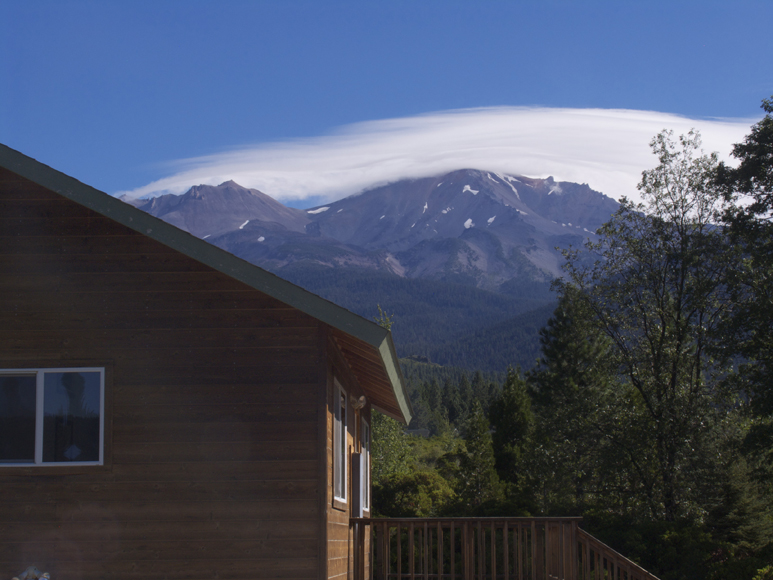
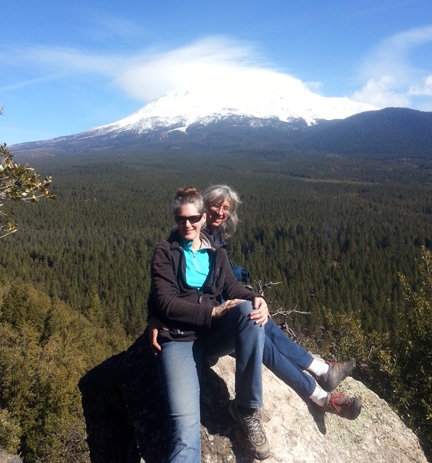
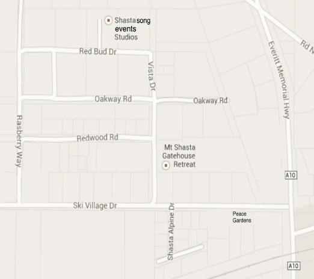
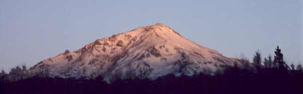

Shastasong Events Studio
Upstairs: Mount Shasta Transformational Music Concerts
Anton Mizerak and tour partner Laura Berryhill offer a series of intimate transformational healing music concerts at their Shastasong Events Studio on the side of majestic Mount Shasta. Admission is by donation. We are available to play concerts on most days of the year. We also host foreign and domestic tour groups. We have hosted groups from Taiwan, Hong Kong, Japan, Germany, Belgium, Finland, Quebec, Mexico, Brazil and Argentina. Check out our group photo gallery and testimonial pages.
Our studio seats thirty three guests. Private concerts can also be booked by emailing us:anton@shastasong.com or by phone, text or whattsapp: 1-530-356-7386.
Downstairs: Recording Studio
Home Page Concert Testimonials Youtube Playlists Anton's Bio Anton's CDs Tour Schedule Laura Berryhill


From I-5 exit at 738 (Lake Street) and head east. Stay on Lake Street for 2 miles. The street name will change to Everett Memorial Highway. After passing Mount Shasta High School and the railroad tracks, turn left on Ski Village Drive. Turn right on Vista. Turn left on Red Bud Drive. Take the 4th driveway on the right (200 meters from Vista). The concerts are upstairs at the Shastasong Events Studio.


This magnificant view of Mount Shasta from the east side of Spring Hill is just half hour hike from our studio.
We are happy to lead any tour group that books a concert with us up to this sacred vista.
